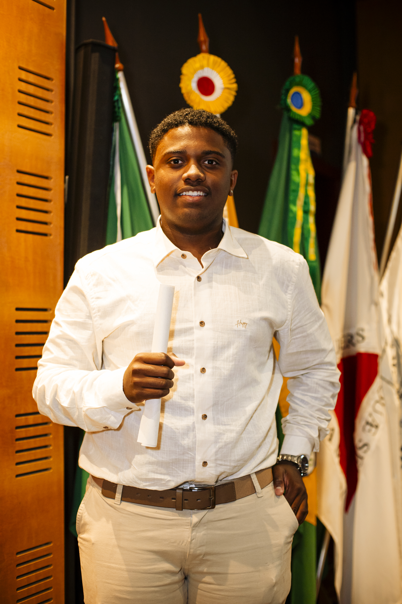

Atuar como estagiário na área de tecnologia e inovação, com foco em desenvolvimento de software, automação e inteligência artificial.
Telefone: (31) 98470-9312
E-mail: ulissesmfg@gmail.com
LinkedIn: /ulissesmfg
Cidade: Betim – MG